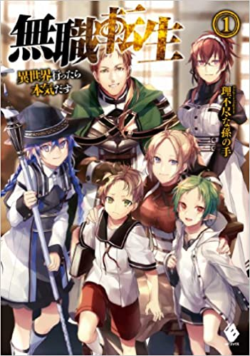
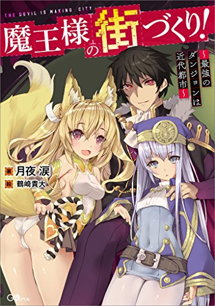

【完結済み】小説家になろう作品
- 転生したらスライムだった件
- 無職転生 ‐異世界行ったら本気出す‐
- 魔王様の街づくり！最強のダンジョンは近代都市～
転生したらスライムだった件

- あらすじ
- 突然路上で通り魔に刺されて死んでしまった、37歳のナイスガイ。意識が戻って自分の身体を確かめたら、スライムになっていた！
え？…え？何でスライムなんだよ！！！などと言いながらも、日々を楽しくスライムライフ。
出来る事も増えて、下僕も増えて。ゆくゆくは魔王でも目指しちゃおうかな？
そんな、どこかずれた天然主人公の異世界スライムライフです。
- 感想
-
人間だった主人公がスライムとして異世界転生するというかなりの色物設定だが、中身は良い意味で王道の異世界転生ものでストレスなく読み進めることが出来る。
異世界ゆえの主人公の混乱や試行錯誤、異世界転生もの定番の“俺TUEEE”や、やたらと主人公を持ち上げる登場人物たちもあり、異世界転生もの好きには何の心配もなくおすすめできる。
topに戻る
無職転生 ‐異世界行ったら本気出す‐

- あらすじ
-
３４歳職歴無し住所不定無職童貞のニートは、ある日家を追い出され、人生を後悔している間にトラックに轢かれて死んでしまう。目覚めた時、彼は赤ん坊になっていた。どうやら異世界に転生したらしい。
彼は誓う、今度こそ本気だして後悔しない人生を送ると。
- 感想
-
この作品では、主人公の赤ん坊の頃から青年になるところまで細かく描かれている。
そして、魔法を勉強し、旅を経て世界の真実を知り、世界の理に抗うという、最終的には壮大な物語となる。
また、主人公は、ある程度の力は持っていますが、最強というわけではなく、何度も挫折や後悔を経験し、そこからの成長していく。そのような一人の人間の本気で生きる姿が描かれており、感情移入してしまう場面も多い。
そしてラストも派手なバトルなどで終わるのではなく、ぬるっと終わっていく、まさしく人生が描かれている作品となっている。
topに戻る
魔王様の街づくり！最強のダンジョンは近代都市～

- あらすじ
-
魔王は自らが生み出した迷宮に人を誘い込みその絶望を食らい糧とする
だが、創造の魔王プロケルは絶望ではなく希望を糧に得ようと決 め、悪意の迷宮ではなく幸せな街を作りたくさんの人間を集めることにした
しかし、彼の作った街は魅力的すぎて、他の魔王にも人間にも目をつけられることになってしまう
しょうがないので、ユニークスキルと独自の知識で超強力な最強魔物軍団を結成、苛烈な罠を仕掛けた地下迷宮を作り、その上に、豊かな街を作ることになる。魔王プロケルは味方には優しく、敵対するものにはどこまで冷酷になる魔王として君臨しはじめた
これは表と裏、両方の顔を持つ、変わり者魔王の物
- 感想
-
この作品は、所謂主人公最強ものである。ただ苦戦もするし、悩んだりもする、でも最後には勝っていく。そのため、気持ちよく最後まで読み切ることが出来る。
topに戻る